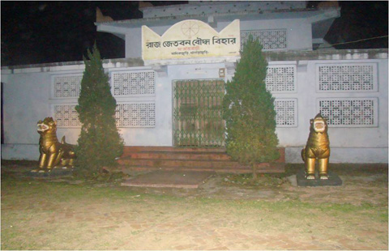

বৈচিত্র্যময় খাগড়াছড়ি

রাজা মংপ্র“ সেইনের প্রপিতামহ রাজা নেপ্র“ সেইন এই কেয়াং ঘরটি নির্মাণ করেছিলেন। এই মন্দির সংলগ্ন একটি বড় ঘরে এক সাথে ৩০-৪০ জন বৌদ্ধ ভিক্ষুর থাকার ব্যবস্থা ছিল। রাজবাড়ি থেকেই এ সকল বৌদ্ধ ভিক্ষুর খাবার ও অন্যান্য প্রয়োজনীয় সামগ্রী সরবরাহ করা হতো।
রাজা মংপ্র“ সেইনের মাতা রাণী নিউমাও পিতার নীতির অনুসরণ করে তাঁর রাজত্বকালে এ সকল বৌদ্ধ ভিক্ষুর খাবার ও অন্যান্য প্রয়োজনীয় সামগ্রী রাজবাড়ি থেকেই সরবরাহ করতেন। এই বৌদ্ধ মন্দিরটিতে একটি বড় ধরণের স্বর্ণের ও ধাতুর তৈরি বুদ্ধমূর্তি ছিল।
রাজা নেপ্র“ সেইন বার্মার উত্তরাঞ্চল থেকে এই বুদ্ধমূর্তিটি নিয়ে এসেছিলেন। এই মূর্তিটিতে অন্যূন ২০ কেজির মত স্বর্ণ ছিল। দখলদার পাকবাহিনী এবং তাদের দোসররা এ সকল স্বর্ণ লুট করে নিয়ে যায়। বড় স্বর্ণের মূর্তিটি ছাড়াও মাঝারি আকারের আরো দুটি মূল্যবান স্বর্ণ মিশ্রিত ধাতুর তৈরি বুদ্ধমূর্তি ছিল।
এগুলোও দখলদার পাকবাহিনী এবং তাদের এদেশীয় দোসররা মুক্তিযুদ্ধ চলাকালীন লুট করে নিয়ে যায়। দেশকে শত্র“ মুক্ত করে রাজা মংপ্র“ সেইন মানিকছড়িতে ফিরে এসে পুরো রাজবাড়িটিকেই একটি ধ্বংসস্তুপের মত পান।
ধীরে ধীরে প্রতিকী বুদ্ধমূর্তি তৈরি করে সেগুলো এই বৌদ্ধ মন্দিরে স্থাপন করেন। বাৎসরিক পূণ্যাহ অনুষ্ঠানে হাজার হাজার বৌদ্ধধর্মাবলম্বী এই কেয়াং ঘরে এসে পূজা-পার্বণ করে থাকেন।